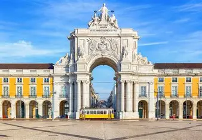
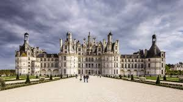
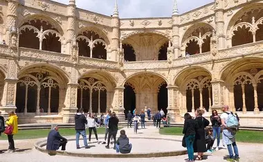
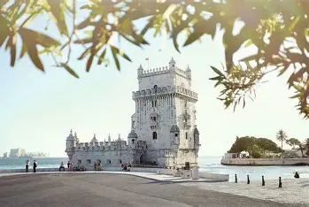
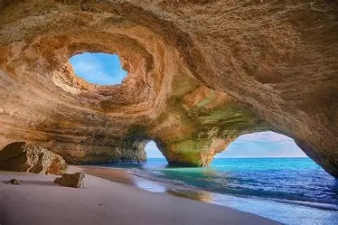

Portugal é considerado um dos países mais seguros do mundo, destacando-se pelos baixos índices de criminalidade e pela qualidade de vida oferecida à população. As cidades portuguesas contam com boa infraestrutura, policiamento eficiente e ambientes tranquilos tanto para moradores quanto para turistas.Além disso, o país investe em segurança pública, educação e bem-estar social, fatores que contribuem para a sensação de segurança no cotidiano. Mesmo sendo um destino bastante seguro, recomenda-se que visitantes mantenham cuidados básicos, especialmente em áreas turísticas movimentadas.
Portugal possui grande riqueza histórica, cultural e natural, atraindo milhões de turistas todos os anos. Cidades como Lisboa e Porto são conhecidas por sua arquitetura, gastronomia e tradições culturais.Os visitantes podem aproveitar praias no Algarve, passeios por castelos históricos, vinícolas e regiões montanhosas, além de experimentar pratos típicos portugueses e os famosos doces tradicionais. O país também é muito procurado por quem aprecia turismo cultural e religioso.
Portugal possui tradições culturais fortemente ligadas à música, à religião e à gastronomia. O fado, considerado patrimônio cultural, é um dos maiores símbolos da cultura portuguesa e representa a identidade e a emoção do povo português.As festas populares também fazem parte do cotidiano do país, como as Festas de São João e as celebrações religiosas realizadas em diversas cidades. A culinária portuguesa é bastante valorizada, com pratos típicos como bacalhau, pastel de nata e frutos do mar preparados de maneira tradicional.

Castelo

Mosteiro dos Jerónimos

Torre de Belem

Portugal vem crescendo na área da tecnologia e inovação, tornando-se um importante centro de startups e empresas digitais na Europa. O país investe em pesquisa, energias renováveis, tecnologia da informação e desenvolvimento sustentável.Cidades como Lisboa se destacam como polos tecnológicos e recebem eventos internacionais de inovação e empreendedorismo. Além disso, universidades portuguesas desenvolvem pesquisas reconhecidas em diversas áreas científicas e tecnológicas.
O sistema de saúde de Portugal é reconhecido pela qualidade dos serviços oferecidos à população. O Serviço Nacional de Saúde (SNS) garante acesso a consultas, exames e tratamentos médicos para os cidadãos e residentes do país.Portugal também investe em hospitais modernos, tecnologia médica e campanhas de prevenção, promovendo qualidade de vida e bem-estar. A combinação entre atendimento público e serviços privados contribui para que o país mantenha bons índices na área da saúde.